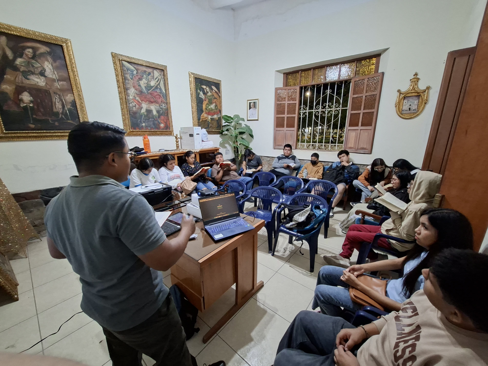
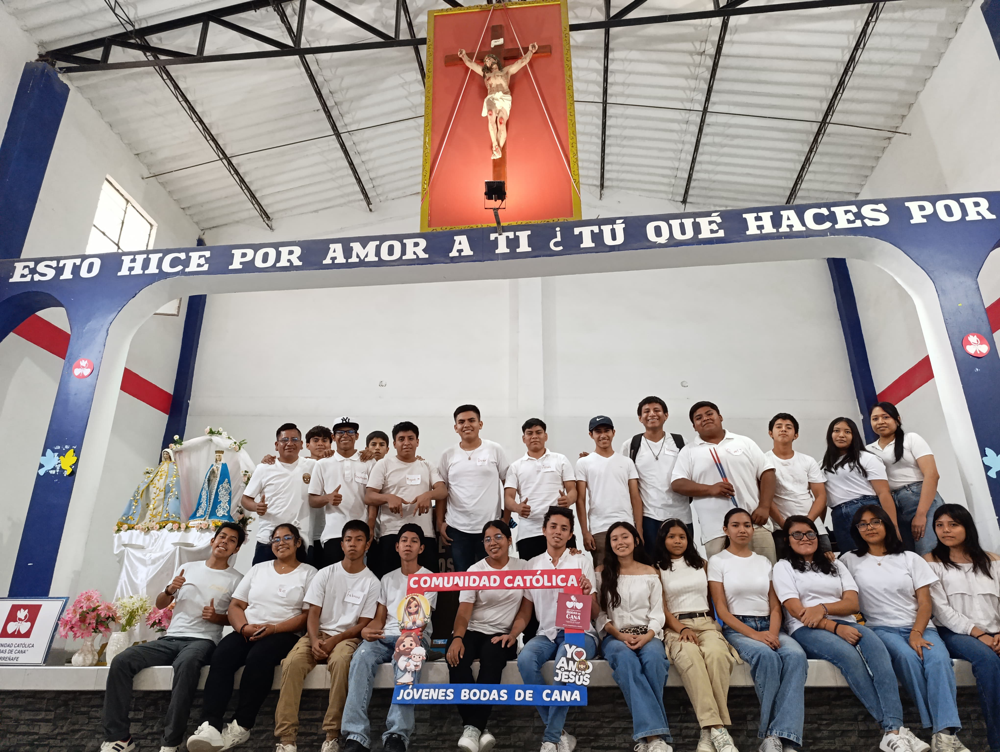
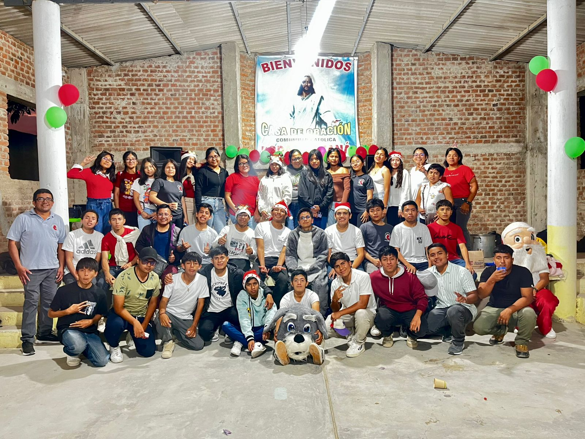
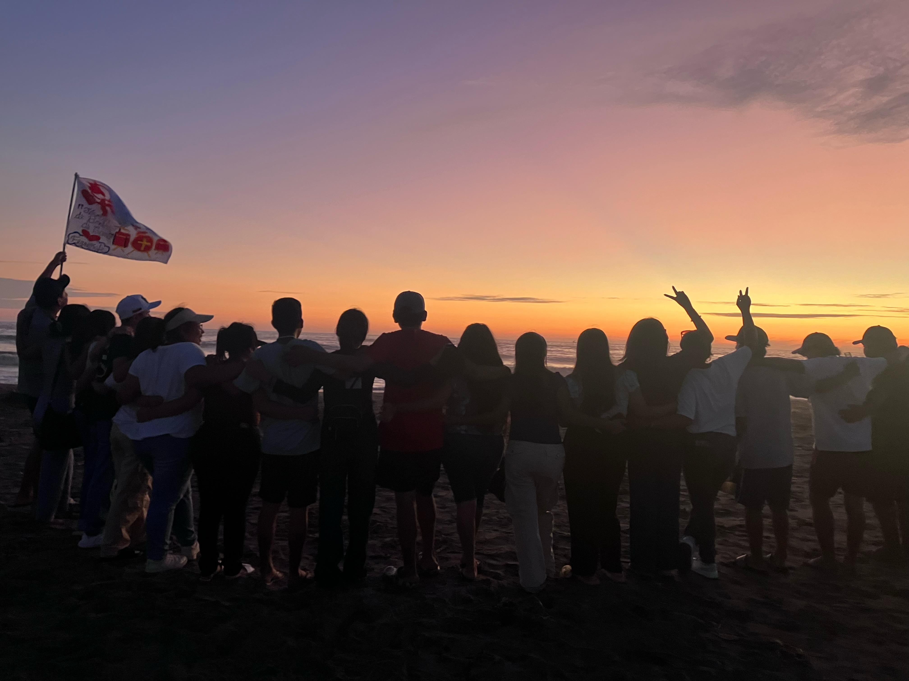

¿Qué hacemos?
Tipos de actividades
Combinamos formación, oración, servicio y momentos de fraternidad durante todo el año.

Formación
Encuentros de formación
Charlas y dinámicas sobre la Palabra de Dios, la doctrina y temas de actualidad para jóvenes, pensadas para crecer en la fe.

Oración
Retiros y vigilias
Jornadas de oración, silencio y adoración para encontrarnos con Dios de manera personal y renovar nuestro compromiso de fe.

Servicio
Misiones y servicio
Visitas y acciones solidarias en la comunidad de Ferreñafe, llevando ayuda y alegría a quienes más lo necesitan.

Fraternidad
Celebraciones y paseos
Compartimos momentos de alegría: cumpleaños, paseos, dinámicas recreativas y celebraciones especiales del calendario litúrgico.